Projects
Some of the projects I've worked on in the past. More projects can be found at my GitHub page.

Distance to Space 1000
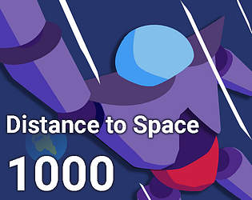Nature's Turn
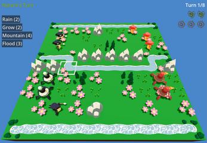UniCal
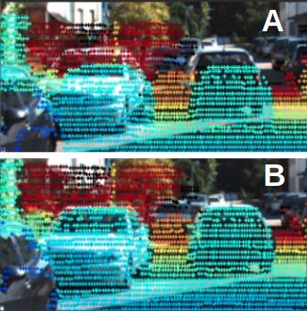Katapat

Without Abandonware
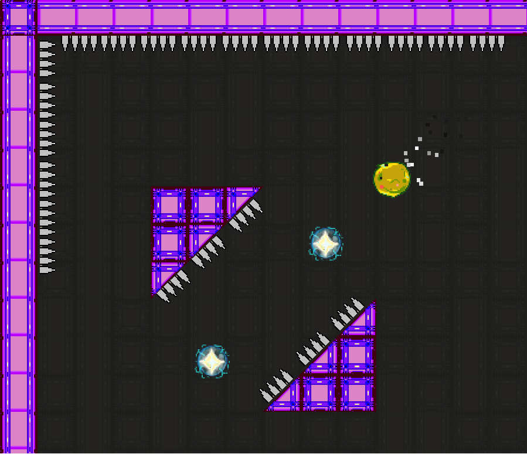Dog Breed Classifier

Twog
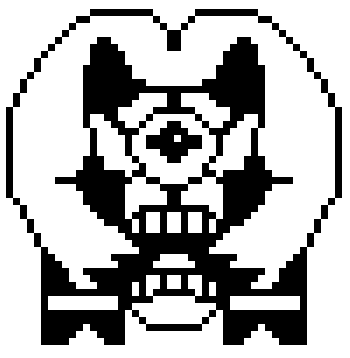Autonomous Snack Delivery Android
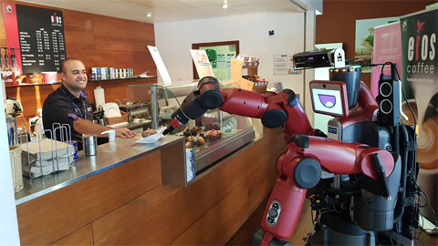Revolver
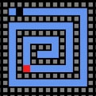Emotional Rollercoaster
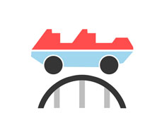ARMAdillo
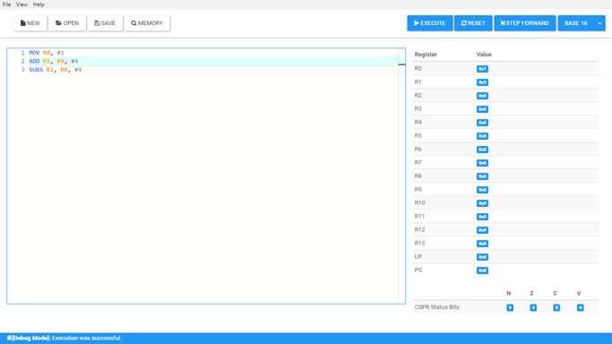Super Miami
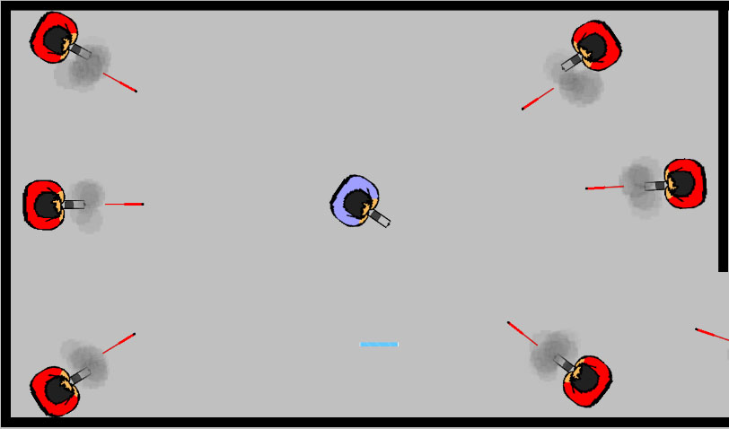NeuroSpell
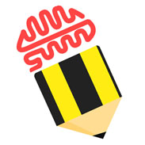ParkWare
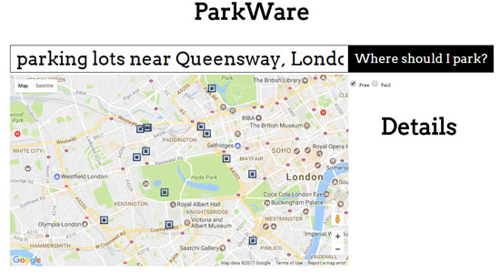EEBug
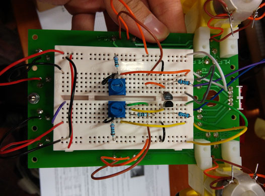Drawing Application
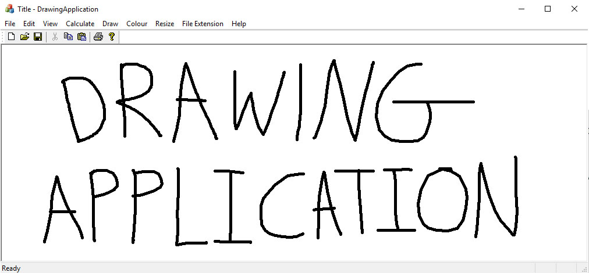Heat Pipe Cooling Design System for Osram LED Luminaires
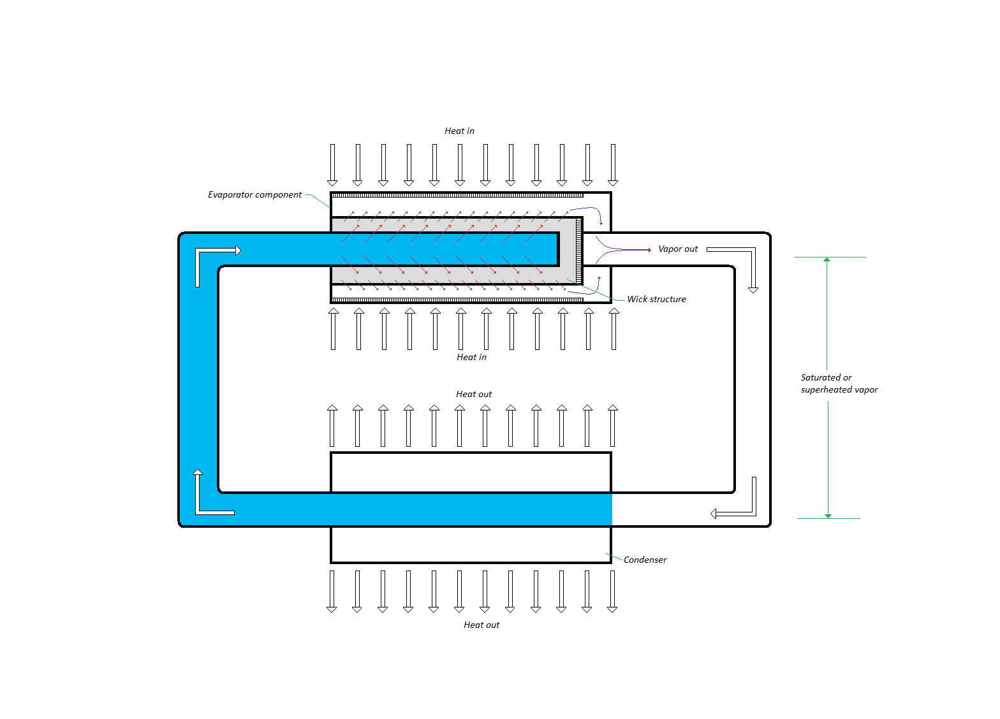